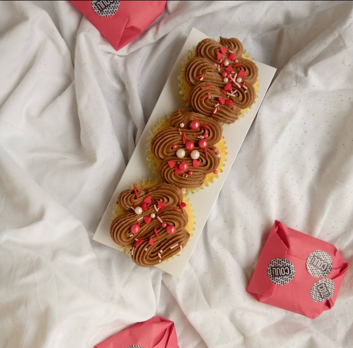

COULi Bakery is an online Bakery in Lagos that makes intercontinental pastries using locally sourced ingredients and fruits.
The core idea behind the bakery is using Nigerian fruits and produce to craft varieties of desserts and making world-class flavours accessible to Nigerians everywhere.
International pastries. Local ingredients. One purpose — to bless your tastebuds.
See Our Products